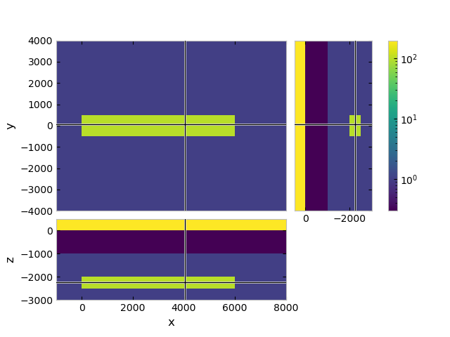
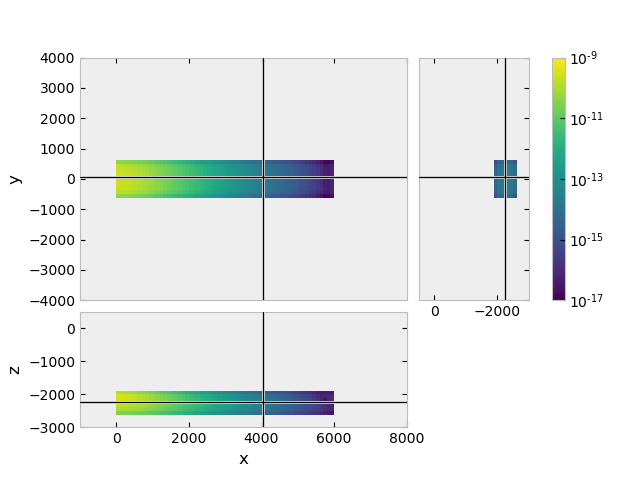
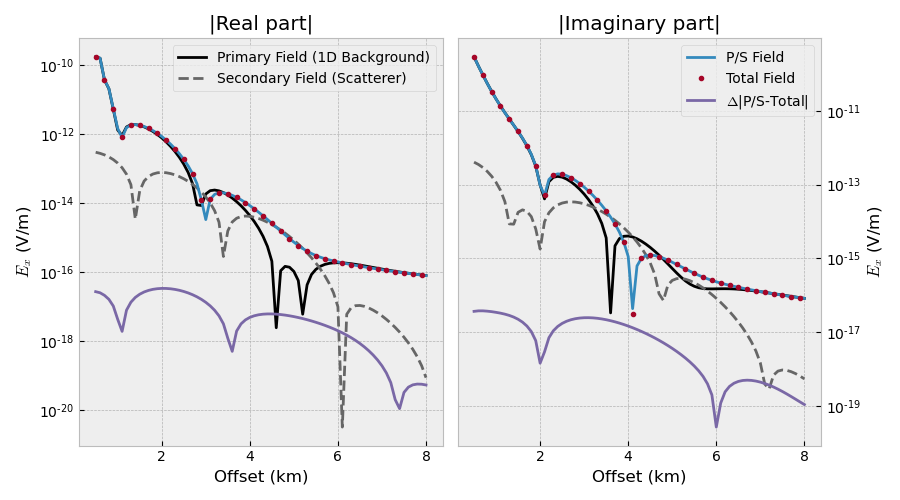

Note
Click here to download the full example code
5. Total vs primary/secondary field¶
We usually use emg3d for total field computations. However, we can also use
it in a primary-secondary field formulation, where we compute the primary
field with a (semi-)analytical solution.
In this example we use emg3d to compute
Total field
Primary field
Secondary field
and compare the total field to the primary+secondary field.
The primary-field computation could be replaced by a 1D modeller such as
empymod. You can play around with the required computation-domain: Using a
primary-secondary formulation makes it possible to restrict the required
computation domain for the scatterer a lot, therefore speeding up the
computation. However, we do not dive into that in this example.
Background¶
The total field is given by
We can split it up into a primary field \(\mathbf{\hat{E}}^p\) and a secondary field \(\mathbf{\hat{E}}^s\),
where we also have to split our conductivity model into
The primary field could be just the direct field, or the direct field plus the air layer, or an entire 1D background, something that can be computed (semi-)analytically. The secondary field is everything that is not included in the primary field.
The primary field is then given by
and the secondary field can be computed using the primary field as source,
import emg3d
import numpy as np
import matplotlib.pyplot as plt
from matplotlib.colors import LogNorm
plt.style.use('bmh')
Survey¶
src = [0, 0, -950, 0, 0] # x-dir. source at the origin, 50 m above seafloor
off = np.arange(5, 81)*100 # Offsets
rec = [off, off*0, -1000] # In-line receivers on the seafloor
res = [1e10, 0.3, 1] # 1D resistivities (Ohm.m): [air, water, backgr.]
freq = 1.0 # Frequency (Hz)
source = emg3d.TxElectricDipole(src)
Mesh¶
We create quite a coarse grid (100 m minimum cell width), to have reasonable fast computation times.
Also note that the mesh here includes a large boundary because of the air layer. If you use a semi-analytical solution for the 1D background you could restrict that domain a lot.
Create model¶
# Layered_background
res_x = np.ones(grid.n_cells)*res[0] # Air resistivity
res_x[grid.cell_centers[:, 2] < 0] = res[1] # Water resistivity
res_x[grid.cell_centers[:, 2] < -1000] = res[2] # Background resistivity
# Background model
model_pf = emg3d.Model(grid, property_x=res_x.copy(), mapping='Resistivity')
# Include the target
xx = (grid.cell_centers[:, 0] >= 0) & (grid.cell_centers[:, 0] <= 6000)
yy = abs(grid.cell_centers[:, 1]) <= 500
zz = (grid.cell_centers[:, 2] > -2500)*(grid.cell_centers[:, 2] < -2000)
res_x[xx*yy*zz] = 100. # Target resistivity
# Create target model
model = emg3d.Model(grid, property_x=res_x, mapping='Resistivity')
# Plot a slice
grid.plot_3d_slicer(
model.property_x, zslice=-2250,
xlim=(-1000, 8000), ylim=(-4000, 4000), zlim=(-3000, 500),
pcolor_opts={'norm': LogNorm(vmin=0.3, vmax=200)}
)

Compute primary field (1D background) with emg3d¶
Here we use emg3d to compute the primary field. This could be replaced
by a (semi-)analytical solution.
Out:
:: emg3d :: 8.8e-07; 1(4); 0:00:14; CONVERGED
Compute secondary field (scatterer) with emg3d¶
Define the secondary source¶
# Get the difference of conductivity as volume-average values
diff = 1/model.property_x-1/model_pf.property_x
dsigma = grid.cell_volumes.reshape(grid.shape_cells, order='F')*diff
# Here we use the primary field computed with emg3d. This could be done
# with a 1D modeller such as empymod instead.
sfield_sf = em3_pf.copy()
# Average delta sigma to the corresponding edges
sfield_sf.fx[:, 1:-1, 1:-1] *= 0.25*(dsigma[:, :-1, :-1] + dsigma[:, 1:, :-1] +
dsigma[:, :-1, 1:] + dsigma[:, 1:, 1:])
sfield_sf.fy[1:-1, :, 1:-1] *= 0.25*(dsigma[:-1, :, :-1] + dsigma[1:, :, :-1] +
dsigma[:-1, :, 1:] + dsigma[1:, :, 1:])
sfield_sf.fz[1:-1, 1:-1, :] *= 0.25*(dsigma[:-1, :-1, :] + dsigma[1:, :-1, :] +
dsigma[:-1, 1:, :] + dsigma[1:, 1:, :])
# Create field instance -iwu dsigma E
sfield_sf = emg3d.Field(
sfield_sf.grid, -sfield_sf.field*sfield_sf.smu0, frequency=freq)
Plot the secondary source¶
Our secondary source is the entire target, the scatterer. Here we look at the
\(E_x\) secondary source field. But note that the secondary source has
all three components \(E_x\), \(E_y\), and \(E_z\), even though
our primary source was purely \(x\)-directed. (Change fx to fy or
fz in the command below, and simultaneously Ex to Ey or Ez,
to show the other source fields.)
grid.plot_3d_slicer(
sfield_sf.fx.ravel('F'), view='abs', v_type='Ex', zslice=-2250,
xlim=(-1000, 8000), ylim=(-4000, 4000), zlim=(-3000, 500),
pcolor_opts={'norm': LogNorm(vmin=1e-17, vmax=1e-9)}
)

Plot result¶
# E = E^p + E^s
em3_ps = em3_pf.copy()
em3_ps.field += em3_sf.field
# Get the responses at receiver locations
rectuple = (rec[0], rec[1], rec[2], 0, 0)
em3_pf_rec = em3_pf.get_receiver(rectuple)
em3_tf_rec = em3_tf.get_receiver(rectuple)
em3_sf_rec = em3_sf.get_receiver(rectuple)
em3_ps_rec = em3_ps.get_receiver(rectuple)
fig, (ax1, ax2) = plt.subplots(1, 2, figsize=(9, 5), sharex=True)
ax1.set_title('|Real part|')
ax1.plot(off/1e3, abs(em3_pf_rec.real), 'k',
label='Primary Field (1D Background)')
ax1.plot(off/1e3, abs(em3_sf_rec.real), '.4', ls='--',
label='Secondary Field (Scatterer)')
ax1.plot(off/1e3, abs(em3_ps_rec.real))
ax1.plot(off[::2]/1e3, abs(em3_tf_rec[::2].real), '.')
ax1.plot(off/1e3, abs(em3_ps_rec.real-em3_tf_rec.real))
ax1.set_xlabel('Offset (km)')
ax1.set_ylabel('$E_x$ (V/m)')
ax1.set_yscale('log')
ax1.legend()
ax2.set_title('|Imaginary part|')
ax2.plot(off/1e3, abs(em3_pf_rec.imag), 'k')
ax2.plot(off/1e3, abs(em3_sf_rec.imag), '.4', ls='--')
ax2.plot(off/1e3, abs(em3_ps_rec.imag), label='P/S Field')
ax2.plot(off[::2]/1e3, abs(em3_tf_rec[::2].imag), '.', label='Total Field')
ax2.plot(off/1e3, abs(em3_ps_rec.imag-em3_tf_rec.imag),
label=r'$\Delta$|P/S-Total|')
ax2.set_xlabel('Offset (km)')
ax2.set_ylabel('$E_x$ (V/m)')
ax2.set_yscale('log')
ax2.yaxis.tick_right()
ax2.yaxis.set_label_position("right")
plt.legend()
fig.tight_layout()
fig.show()

Total running time of the script: ( 0 minutes 55.446 seconds)
Estimated memory usage: 213 MB